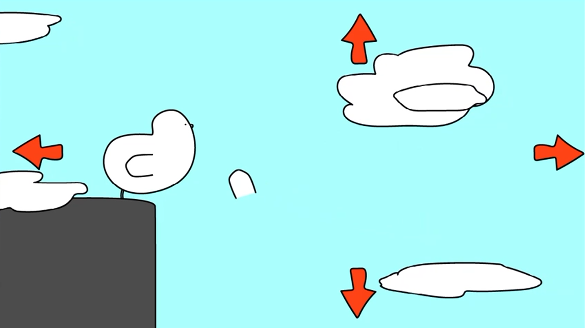
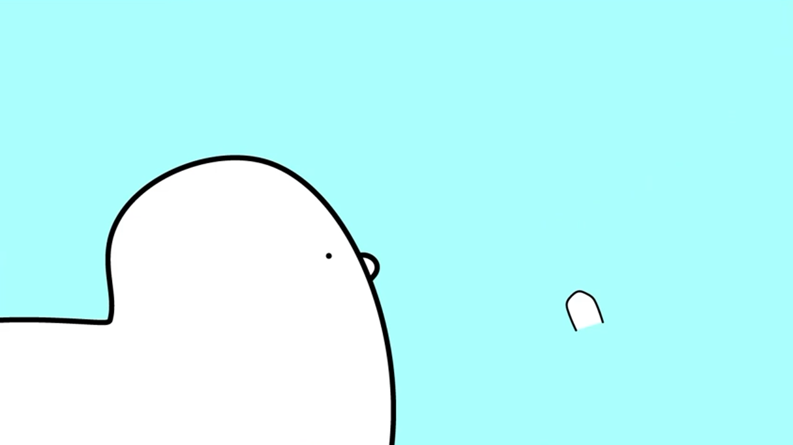
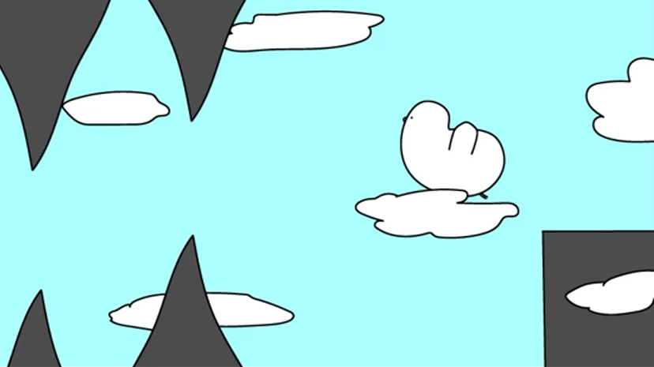
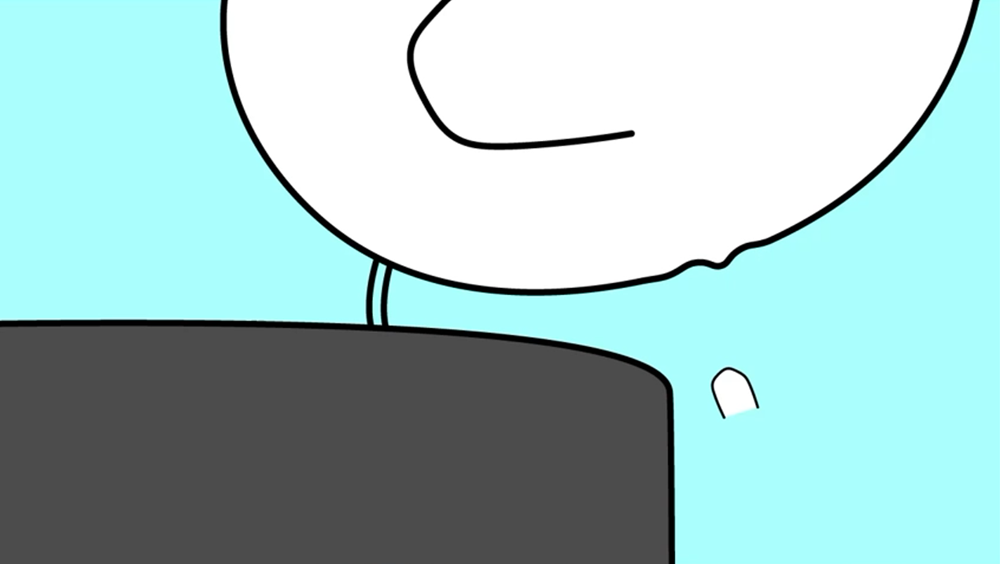
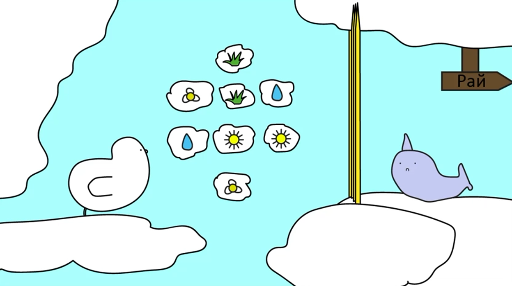

Quest / Adventure
2015 · Construct 2
Приключенческая игра-квест, в которой игрок управляет птичкой, выбирая направление движения на каждом этапе. В различных локациях доступны разные варианты действий, а игра предлагает несколько альтернативных концовок в зависимости от принятых решений. Проект является экспериментом с нелинейным повествованием в рамках простого игрового формата.
Создать интерактивный квест с ветвящимся сюжетом и несколькими концовками, исследуя возможности нелинейного повествования.
Создан интерактивный квест с несколькими ветвлениями сюжета и альтернативными концовками. Проект позволил получить опыт работы с нелинейным повествованием и системой состояний.




